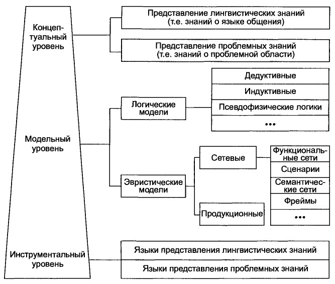

Лекция№6 "Представление знаний"
Мощность любой интеллектуальный системы (ИС) определяется, в первую очередь, мощностью базы знаний и возможностью ее пополнения. Знания, позволяющие с помощью ИС получать качественные и эффективные решения задач, это, в основном, знания эвристические, экспериментальные, неопределенные и правдоподобные, поскольку решаемые задачи являются неформализованными или слабоформализованными; поэтому для записи знаний на машинный носитель в искусственном интеллекте (ИИ) существуют специальные формализмы и языки представления знаний (ЯПЗ).
Обычно способ представления знаний в ИС характеризуют моделью представления знаний. Выбор модели представления знаний и построение формализованноrо представления предметной/проблемной области в виде фраrментов базы знаний (БЗ) осуществляются инженером по знаниям на этапе формализации, который следует после этапов получения и структурирования знаний.
Фундаментальные вопросы, связанные с представлением иформализацией знаний, детально описаны во мноrих работах по ИИ, например, поскольку до недавнеrо времени именно различные языки представления знаний (ЯПЗ) были цeнтральной проблемой при разработке ИС. К настоящему вpeмени предложено значительное число различных моделей представления знаний и базирующихся на них языков, а также соответствующих систем проrраммирования, реализующих эти языки. Однако из всего накопленноrо арсенала и мноrообразия моделей и ЯПЗ в современных ИС и инструментальных средствах для них практически используются только правила и объекты (фреймы). Основная цель данноrо раздела описать некоторый набор базовых сведений, необходимых инженеру по знаниям при построении БЗ.
При создании ИС после решения вопросов, связанных с определением состава и структуры представляемых знаний, необходимо определить модель представления, Т.е. выбрать из значительноrо числа существующих моделей представления знаний ту, с помощью которой наиболее адекватно и эффективно можно будет обеспечить репрезентацию в памяти компьютера понятийной структуры проблемной/предметной области.
Следует отметить, что в общем случае выделяют несколько уровней представления знаний, как это показано на следующем рисунке, причем количество элементов на каждом уровне увеличивается сверху вниз по типу треуrольника. В правой части рисунка показана классификация формализмов на каждом уровне представления знаний. Рассмотрим особенности отдельных типов моделей, наиболее важные с точки зрения выбора той или иной модели. Haпример, для построения экспертной системы (ЭС). В таблице 1 приведено pacширенное описание показанных на рисунке базовых моделей представления знаний.
Для данноrо класса ИС наибольшее практическое использование получили только эвристические модели. Дело в том,что в логических моделях (дедуктивных, индуктивных, псевдофизических-лоrиках), в основе которых лежит понятие формальной системы (теории), отношения, существующие между отдельными единицами знаний, выражаются с помощью достаточно небоrатых средств, предоставляемых синтаксическими правилами формальной системы. В отличие от них эвристические модели обладают достаточно разнообразным набором средств, передающих специфические особенности той или иной програмной области, а также превосходят лоrические модели по эффективности используемых правил вывода. Из эвристических моделей, получивших наибольшую популярность в средствах обработки знаний, можно выделить продукционные модели, фреймы(объекты) и семантические сети. Сравним эти модели на coдepжательном уровне (более строrие определения и примеры будут даны по ходу дальнейшеrо изложения). Продукционная модель это модель, основанная на правилах, позволяет представлять знания в виде предложений типа:

ЕСЛИ {<условие>} ТО {<действие>} [ИНАЧЕ {<действие>},
где
Модель в виде семантической сети представляет собой ориентированный rраф с помеченными вершинами (понятиями) и дуrами (отношениями между понятиями). Таким образом, Bepшины семантической сети мoryт иметь различные интерпретации (абстрактные или конкретные сущности предметной области), а дуrи отношения моryт принадлежать к различным типам отношений (линrвистическим, теорети ко множественным, лоrическим, квантифицированным). Основным достоинством этой модели является возможность наиболее адекватноrо отображения окружающеrо мира, однако rpомоздкость, сложность peaлизации механизмов вывода и целый ряд друтих недостатков не привели к использованию семантических сетей в средствах обработки знаний. Массовому Наибольшее распространение эта модель получила в информационно-диагностическиъ системах.
Фрейм есть абстрактный образ или ситуация, для отображения которых используется представление в виде сети. «Верхниеуровню> этой сети зафиксированы и представляют сущности. Bcerдa истинные в ситуации, описываемой данным фреймом, а «нижние уровни» заканчиваются слотами «дырками», «щелями»), заполняемыми конкретной информацией при вызове фрейма. Модель фрейма является достаточно универсальной. Различают следующие виды фреймов:
Современной эволюцией модели фрейма является так называемая объектно-ориентированная модель, кorдa знания представляются в виде классов объектов, имеющих определенные атрибуты.Достоинства фреймов как моделей представления знаний связаны с их наrлядностью, rибкостью, модульностью, наследованием свойств, использованием процедурных привязок. Наиболее интересным и перспективным случаем является совместное использование в ИС двух моделей представления знаний, например, продукций и фреймов, тorдa говорят о гибридной модели представления знаний и гибридной ИС. Отметим, что модели представления знаний и ЯПЗ можно разбить на модульные и сетевые . Модульные ЯПЗ оперируют отдельными единицами (элементами) поверхностных знаний (правила и аксиомы Программной обработки), а сетевые ЯПЗ обеспечивают связывание этих единиц через отношения в семантические сети или сети фреймов, что позволяет представлять глубинные знания.
Таблица 1
| Тип модели | Комментарий |
| Дедуктивная | Решаемая проблема записывается в виде yrверждений некоторой формальной системы (например,исчисления предикатов первого порядка). Цель проблемы также записывается в виде утверждений, справедливость которых нужно установить или опровергнуть на основании аксиом и правил вывода |
| Индуктивная | Здесь для получения общих выводов из наличия совокупности частных утверждений используется другой механизм, который может быть либо вероятностным, либо логическими в зависимости от специфики изучаемого явления |
| Псевдофизические логики | Класс дедуктивных формальных систем,отличающихся тем, что в качестве пропозициональных переменных используются лингвистические переменные Заде или порядковые шкалы |
| Функциональные сети | Сети этого типа некоторую декомпозицию отражают определенной вычислительной или информационной процедуры, а дуги показывают функциональную связь между частями, возникающими в результате декомпозиции (например, блок-схема программы и т,п,) |
| Сценарии | Однородные сети, в которых в качестве единственного отношения выступает отношение нестрогого порядка,семантика которого может быть различна (например,все возможные последовательности событий это сетевой график и т,п,) |
| Семантические сети | Ориентированный граф с помеченными дугами состояниями (т.е. вершины сети могут иметь различную интерпретацию, а дуги отношения принадлежат к различным типам: логическим,линrвистическим, теоретикомножественным,квантифицированным) |
| Фреймы | Формализованная модель для отображения абстрактного образа или ситуации где I - имя фрейма; vj имя j-ro слота gj - значение j-ro слота; pj процедуры, присоединенные к j-му слоту |
| Продукции | Модель, основанная на правилах, позволяющих представлять знания в виде предложений типа:ЕСЛИ {<условие>} ТО {<действие>}[ИНАЧЕ {<действие>}] |